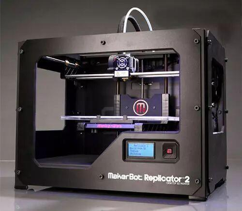

使用小程序
3D打印，可能大多数人都曾了解过。并且由于当前普通3D打印机性价比高，较低的价格即可以买到一台。通过发挥自己的想象力打印出一件属于自己的小物品，是不是很神奇？然而为什么3D打印现在还没有在多个方面应用呢，有很多原因。

01
3D打印是一种以数字建模文件为基础，运用粉末状金属或塑料等可粘合材料，通过逐层打印的方式来构造物体的技术。可以被应用于多种领域。例如鞋子、工业设计、建筑等。
大家还记得我们电协上一届的小车比赛吗？有一些参赛选手小车上的“爪子”即由3D打印制作，看起来特别酷。还可以打印机器人、跑车、更加令人振奋的是3D打印可以为残疾人士放飞梦想，制作出他们所缺少的那一部分肢体。在今年的四月十七日，以色列研究人员宣布，他们一人体组织和细胞为原材料，用3D打印出完整心脏。看起来3D打印似乎无所不能，只有你想不到的，没有它做不到的。然而事实并非如此。
<< 滑动查看下一张图片 >>
▲一些3D打印制作的物品
02
2018年底，美国的两家桌面级的3D打印公司TypeAMachines与New Matter先后宣布停止运营。让很多人开始思考其前景。3D打印有很大的局限性。主要表现在以下几个方面。
首先它的原材料仅限于塑料和金属，增加了成本。即使可以回收利用，也无法与玻璃木料等更便宜的材料比拟。只能用于小型工厂。
其次是绘图需要专业性的人才，能够使用专业建模软件制作三维模型的人毕竟是少数。人才的培养是一个很漫长且艰辛的过程。
最后3D打印出的产品只停留在试用阶段，例如前文提到的心脏，它有着心脏外形甚至相同的血管，但是它没有心脏所具有的功能。所以无法被大规模推广使用。
03
最后，想提醒大家的是，科技发展日新月异，英伟达新推出的GAUGAN向我们展示了AI的强大。3D打印也处于不断的发展之中。也许某一天，它将会消除这些缺点，变得真正“无所不能”
部分知识来源于网络，如有侵权请联系删除
编辑：秦艳霞
文字：秦艳霞
图片：百度